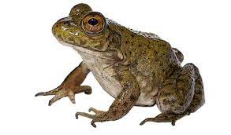

Habitad

Hábitat natural: cuerpos de agua, como pueden ser lagos, ríos, charcas o estanques (Knapp 2001). Prefieren aguas someras, tranquilas y cálidas. Toleran temperaturas altas de agua y se adaptan bien a ambientes perturbados por el hombre (Bruening, 2001).
Caracteristicas
es una rana grande
- nativa del este de Norteamérica
- Su tamaño promedio esta en el intervalo de 100-175 mm
- puede llegar a pesar hasta 600 gramos
- habita grandes cuerpos de agua permanentes, como pantanos, estanques y lagos.
menú